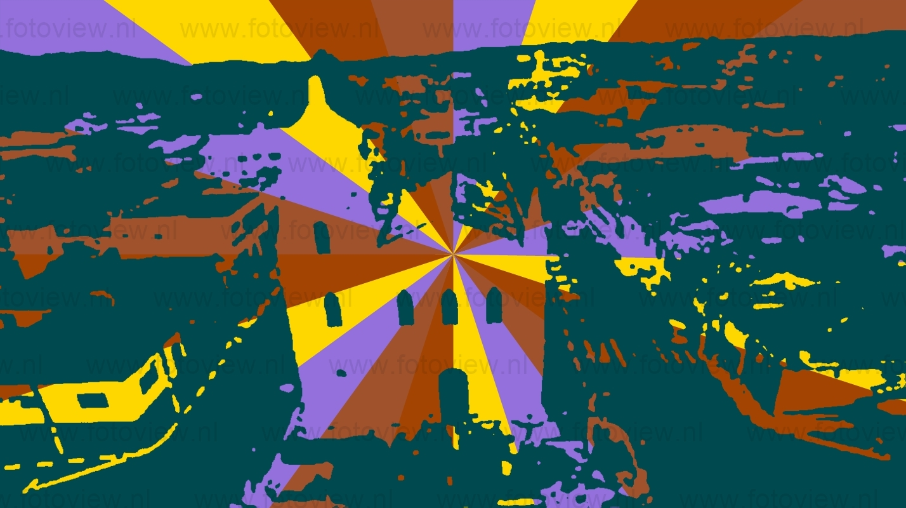

Fundada por um grupo de portugueses chefiados por Antônio Pinto de Magalhães Mesquita, Hildebrando de Macedo, Manuel Pinto de Almeida e Francisco Lara França, Jacupiranga nasceu ao redor da pequena Capela da Imaculada Conceição. Mais tarde, em 1888, o coronel Magalhães Mesquita, com a ajuda do padre Antônio Domingos Rossi, construiu a Igreja Matriz da cidade. Em 1870, quando atingiu a categoria de vila, passou a ser Jacupiranga, palavra de origem indígena que significa jacu vermelho, um pássaro nativo da região. Hoje, possui belo casario histórico. A Lei Estadual 2 253, de 29 de dezembro de 1927, criou o município, como território desmembrado de Iguape. Jacupiranga conseguiu sua emancipação político-administrativa em 29 de dezembro de 1927 e a instalação em 23 de junho de 1928. Foi elevada a comarca em 31 de dezembro de 1963.
